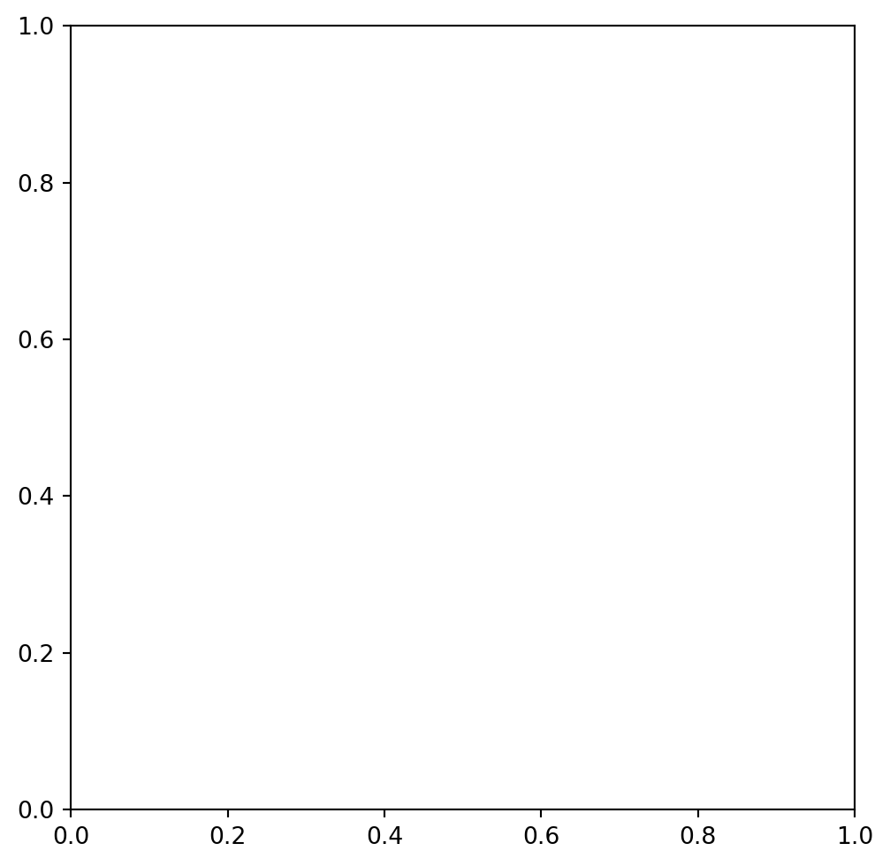
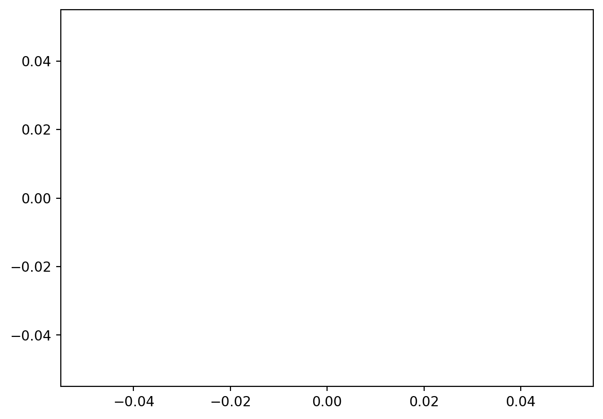
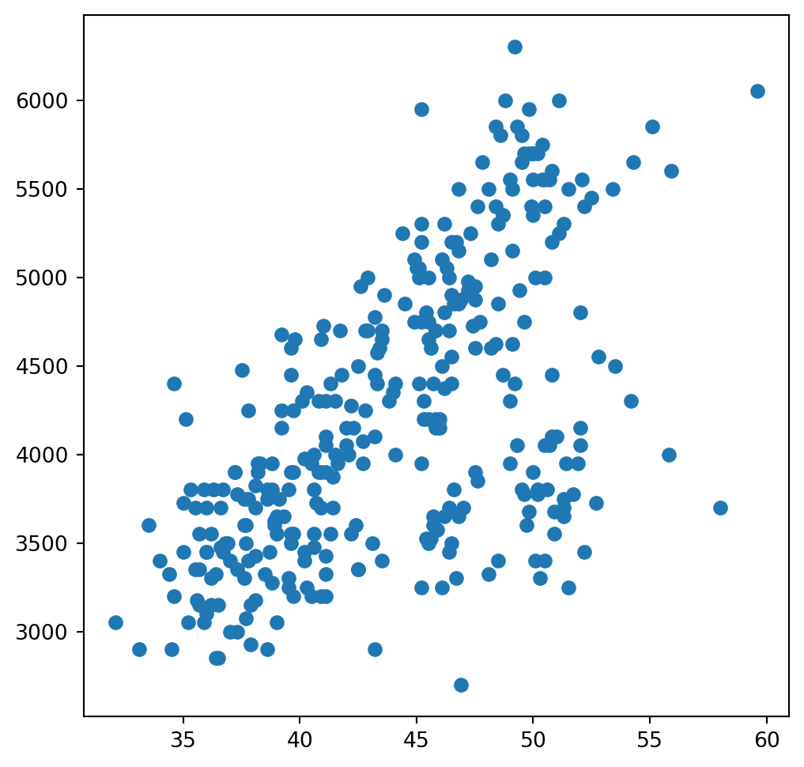
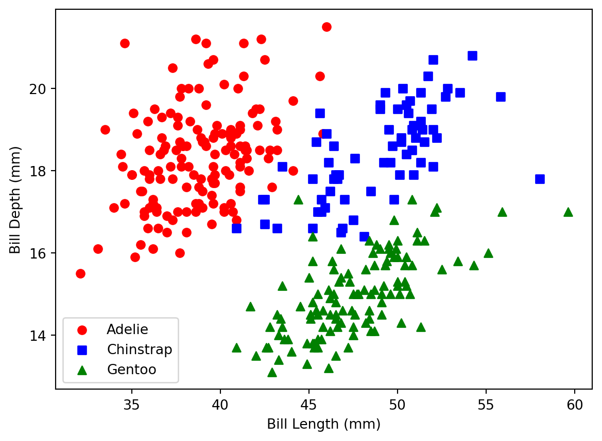
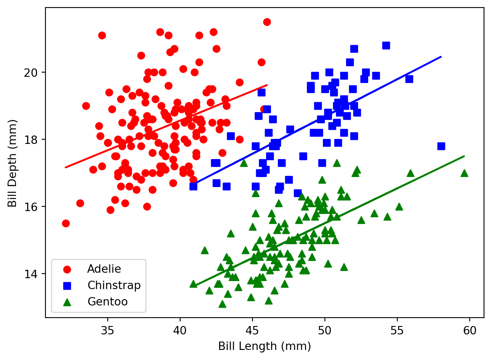

import polars as pl
import matplotlib.pyplot as plt
from palmerpenguins import load_penguins
# Load dataset into a Polars DataFrame
penguins = pl.from_pandas(load_penguins()).drop_nulls()1 Data Viz with Matplot
It is time to learn the grammar of matplot. Since it is the most popular library and you are going to use data viz a fair amount
1.1 Initializing a plot
The basics of matplot are kind of like ggplot just reshuffled a little bit. To initialize a plot we first create an object.
fig,ax = plt.subplots(figsize = (6,6), subplot_kw = {'aspect':1})
So in a matplot fig we have control over the axis and what goes in the figure. The figure parts control the actual plotting of the data similar to geometries in ggplot. We initialize the plot with an aspect ratio of 6 inches wide by 6 inches tall. There are some finer points on the axis but basically we have control over the traditional x and y axis. However, matplot thinks of the the major grid and minor grids, and major labels and minor labels as axis as well. The axis also control the projections of the plot. So if we wanted a polor projection we could do
fig,ax = plt.subplots(figsize = (12, 6),subplot_kw = {'projection': 'polar', 'aspect': 1})
Which is pretty straight forward. There are some nuances within this but we are just going to keep it pushing.
1.2 Adding geometries
The next step is to start adding things so we are just going to initialize a new plot. We kinds of just add things with a dot instead of a + so lets make a simple scatter plot.
fig,ax = plt.subplots(figsize = (6,6))
plt.scatter(x = penguins['bill_length_mm'], y = penguins['body_mass_g'])
Matplot is a little bit dumber than ggplot meaning that it will just do exactly what you tell it. So instead of putting basic labels on the x and y axis like ggplot it will just plot the data. So if we wanted to add labels to the axis than we need to add the labels
plt.xlabel('Bill Depth(mm)')
plt.ylabel('Body Mass (g)')
plt.close()We can also add more geometries like this
import numpy as np
from statsmodels.nonparametric.smoothers_lowess import lowess
x = penguins['bill_depth_mm'].to_numpy()
y = penguins['body_mass_g'].to_numpy()
smoothed = lowess(y, x, frac=0.3) # Adjust `frac` for smoothing degree
x_smooth = smoothed[:, 0]
y_smooth = smoothed[:, 1]
plt.scatter(x, y)
plt.plot(x_smooth, y_smooth)
plt.xlabel('Bill Depth (mm)')
plt.ylabel('Body Mass (g)')
plt.close()If we wanted to change the method we could do
from sklearn.linear_model import LinearRegression
x_reshape = x.reshape(-1,1)
model = LinearRegression()
model.fit(x_reshape, y = y)
y_pred = model.predict(x_reshape)
plt.scatter(x, y, s=10, alpha=0.7, label="Original Data")
plt.plot(x, y_pred, color="red", label="Linear Regression")
plt.xlabel("Bill Length (mm)")
plt.ylabel("Body Mass (g)")
plt.title("Linear Regression: Bill Length vs Body Mass")
plt.close()So the pattern emerges that we have some differences based on subgroups. So we need to plot these by species and then fit a regression line. In ggplot this process is a little bit more compact. But for matplot it is a lot like base R where we loop over and then do this.
species_unique = penguins.unique(subset='species').sort('species')['species']
markers = ['o', 's', '^']
colors = ['red', 'blue', 'green']
for species, marker, color in zip(species_unique, markers, colors):
species_data = penguins.filter(pl.col('species') == species)
plt.scatter(x = species_data['bill_length_mm'], y = species_data['bill_depth_mm'],
label = species, marker = marker, color = color )
plt.xlabel('Bill Length (mm)')
plt.ylabel('Bill Depth (mm)')
plt.legend()
In a similar way we need to do this for the the linear regression lines
for species, marker, color in zip(species_unique, markers, colors):
# Filter data for the current species
species_data = penguins.filter(pl.col('species') == species)
# Extract x and y values
x = species_data['bill_length_mm'].to_numpy()
y = species_data['bill_depth_mm'].to_numpy()
# Scatter plot
plt.scatter(x, y, label=species, marker=marker, color=color)
# Fit linear regression (1st-degree polynomial)
m, b = np.polyfit(x, y, 1)
# Plot regression line
plt.plot(x, m * x + b, color=color)
# Add labels and legend
plt.xlabel('Bill Length (mm)')
plt.ylabel('Bill Depth (mm)')
plt.legend()
plt.show()